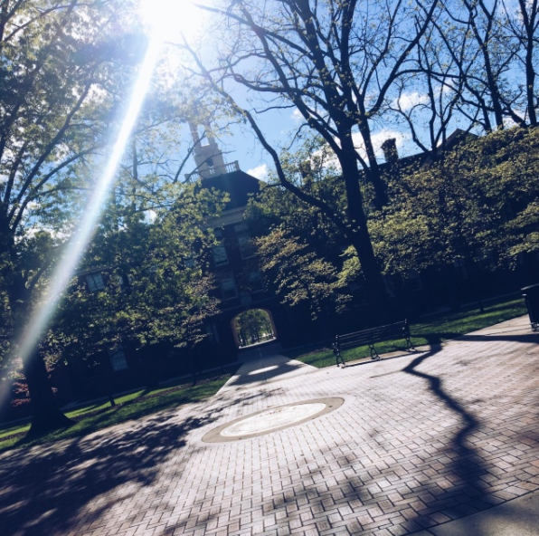
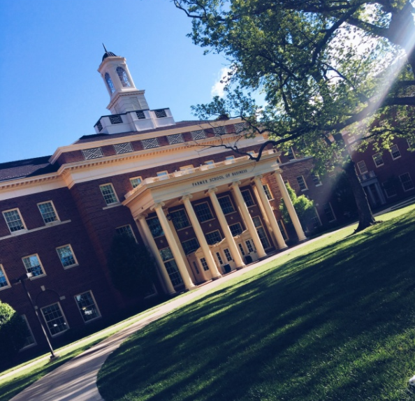
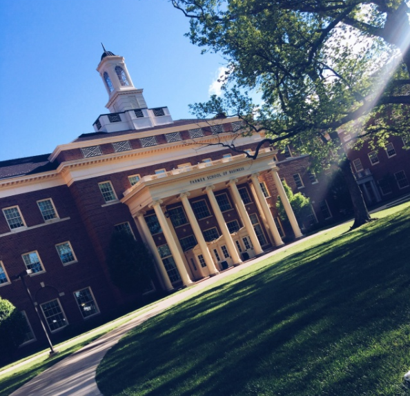

I am a current senior attending the beautiful Miami University in Oxford, Ohio. I am majoring in Strategic Communications and double minoring in Interactive Media Studies and Management & Leadership. Additionally, I am completing a marketing thematic sequence. This unique mix gives me background knowledge on public relations, web design/coding and business.
My aspirations for a career are in the public relations/marketing industry with a particular interest in the areas of advertising, branding, communications and digital marketing.
I have a strong communication background in numerous areas, including marketing, creative, client, event planning and public relations. I attribute my skills to the work experience I have had working as a marketing communications intern at PeopleNet in Minnetonka MN and marketing intern at MarketingLab in Minneapolis, MN. On top of this, I had the opportunity to participate in Miami University’s Inside New York program and job shadow at Forbes, participate in the 2017 National Public Relations Student Society of America (PRSSA) Bateman competition, and my role as account executive in PR Visions, a student-run PR firm through PRSSA.
Thank you so much for visiting my professional portfolio. Enjoy looking around my site and getting to know a bit more about me!
 
